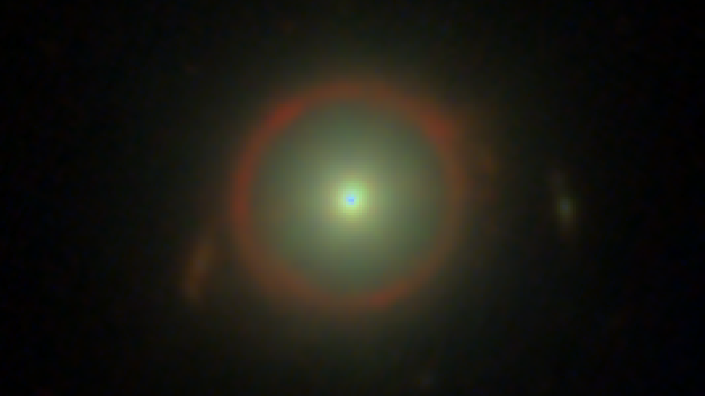
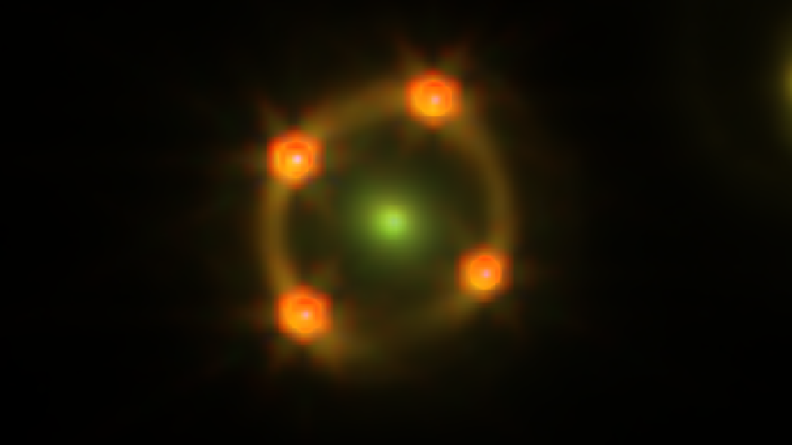

Tutorials
Two real lenses observed with JWST, from the image to a posterior you can judge. Written for people who have never modelled a lens: every input file, every setting and every figure is explained. If you are new, start with the galaxy–galaxy lens, then read the quasar tutorial for what changes.


PrimerLens modelling in ten minutes
Strong lensing. When a massive galaxy sits almost exactly in front of a more distant one, its gravity bends the light of the background galaxy into arcs, a ring or several images. The foreground galaxy is the lens, the background object the source. The radius of the ring is the Einstein radius θE, typically about 1″ (one arcsecond, 1/3600 of a degree) for a galaxy.
Two kinds of lens. In a galaxy–galaxy lens the source is an ordinary galaxy: you see extended arcs or a ring. In a lensed quasar the source has a tiny, extremely bright nucleus: you see two or four point images, often on top of the arcs of the quasar's host galaxy. Quasars vary in brightness, and the delays between their images measure cosmological distances and the Hubble constant.
What is in the image. Every pixel contains the light of the lens galaxy, the lensed light of the source, the sky background and noise; everything is blurred by the telescope's point-spread function (PSF).
A lens model is a forward simulation of that image. It has ingredients with parameters:
| ingredient | typical description | what it tells you |
|---|---|---|
| mass of the lens | an elliptical power law (EPL: θE, slope γ, ellipticity, centre) plus an external shear from the environment; sometimes other galaxies along the line of sight | how much mass, how it is distributed |
| lens light | Sérsic profiles | where the stars are |
| source | a smooth function or a pixel image of the background galaxy | what the source looks like without the lens, magnified |
| point images | scaled copies of the PSF (quasars only) | image positions and fluxes |
| PSF | measured on stars, refined in the fit | the blurring |
Fitting. For given parameters, the model predicts every pixel. The normalised residual is (data − model) / noise. A good model leaves residuals that look like noise: values around ±1 and no pattern. χ²red is the mean squared normalised residual: about 1 for uncorrelated noise, and lower (about 0.5) for JWST mosaics, whose neighbouring pixels are correlated. Fitting means finding the parameters with the smallest residuals, the best fit (MAP); sampling then finds all parameters that fit about as well, the posterior, which gives every number its uncertainty.
Why it is hard. Many different combinations of mass and source can produce similar images (degeneracies); a very flexible source can imitate the arcs without any lensing; the PSF and the lens light are never perfect. A good modeller therefore looks at the residuals, changes one thing at a time and checks that the answer does not depend on arbitrary choices. The tutorials show how.
Play with a lens. Change the mass of the lens and drag the source (right) across the red caustic: watch a ring, arcs, two or four images appear on the left. Every slider is a parameter ALPACA fits.
How ALPACA worksOne run, from the inputs to the posterior
| what | you provide / ALPACA does | where |
|---|---|---|
| 1 · inputs | an image of the lens, its noise map, two masks, a PSF (from stars) and, optionally, a catalogue of nearby galaxies, as FITS / JSON files | data/ |
| 2 · configuration | every modelling choice in one JSON file: start from the one that ships with ALPACA and change what is specific to your lens, or build it in the configurator | config.json |
| 3 · run script | file paths, the lens position, quasar image labels | run_alpaca.py |
| 4 · best fit | three stages of gradient descent: many random starts with a smooth source; the lens light on a larger frame; a pixelated source with everything fitted together | run/03_multistart/ |
| 5 · judge | you look at the residuals, χ² per region and the warnings in the log, and fix what is wrong | run/03_multistart/best_model/ |
| 6 · posterior | NUTS sampling from the best fit | run/04_sampling/, run/05_posterior/ |
The command is the same for every lens:
python run_alpaca.py config.json --fit-only # steps 4-5: the best fit
python run_alpaca.py config.json # the same folder: the best fit is reloaded, then step 6Before you startWhat you need
- Python 3.11 or newer and ALPACA installed (installation);
alpaca-deviceshows your device; - for the best fit: a laptop works for a quick look, a GPU (NVIDIA, 16–24 GB) takes 20–40 min; for sampling: ideally two GPUs, a few hours;
- no prior knowledge of lens modelling: the primer above and the tutorials explain everything you need; basic Python and the command line help.
The repository's llm/ folder has instruction files for Claude Code, Codex or the Gemini CLI. The
assistant sets up the environment, prepares your data and starts a first model with you (see the
AI-assisted workflow). The tutorials explain what it does and why.